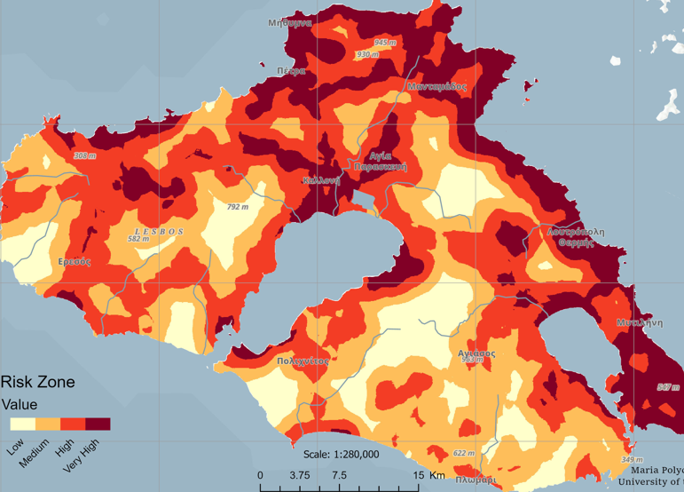
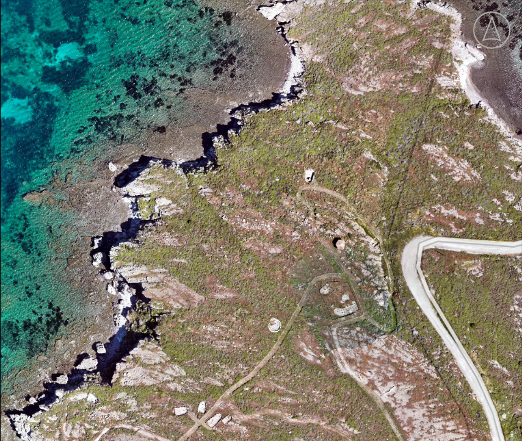

Maria Polychroniadou
GIS | Remote Sensing
MSc student in Geography & Applied Geoinformatics at the University of the Aegean, specializing in remote sensing, deep learning, and heritage conservation. My thesis focuses on automated damage detection at heritage monuments using CNNs and UAV data. I have a BA in Heritage Management and experience in archaeological fieldwork and research.


Projects

Cairo Urban Expansion 2015-2025
Cairo Urban Expansion 2015-2025
Mapping urban land in the Cairo region from Sentinel-2 imagery, using a neural network trained in MATLAB
View on GitHub →
Wildfire Risk Mapping
Wildfire Risk Mapping
A spatial logistic regression model that estimates relative wildfire ignition risk across Lesvos, Greece
View on GitHub →
Geoheritage Mapping
Geoheritage Mapping
Mapping of fossilised Plaka Park in Lesvos
View on GitHub →